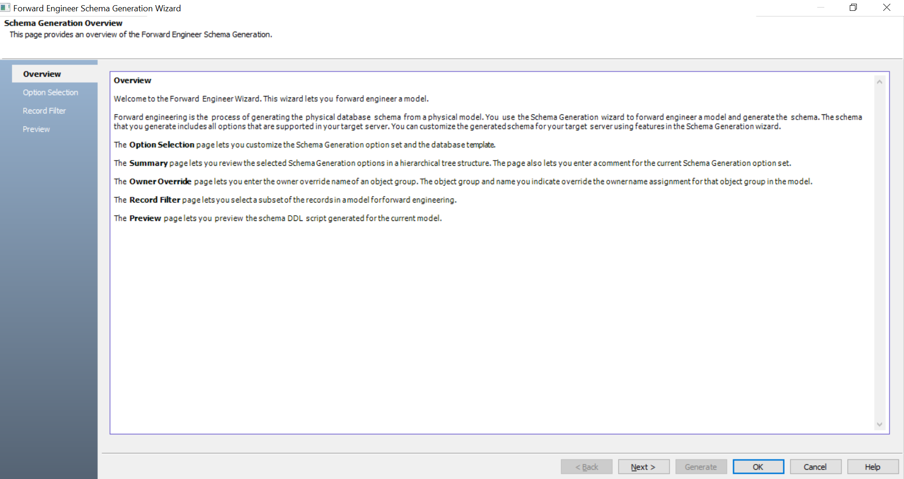
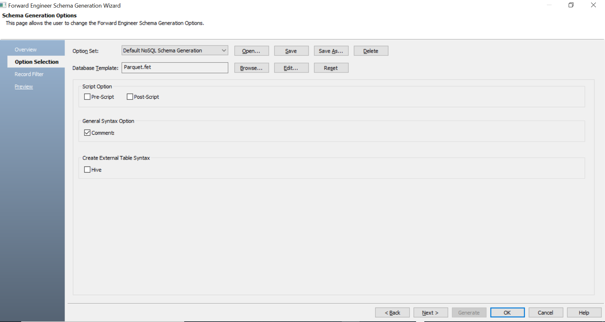
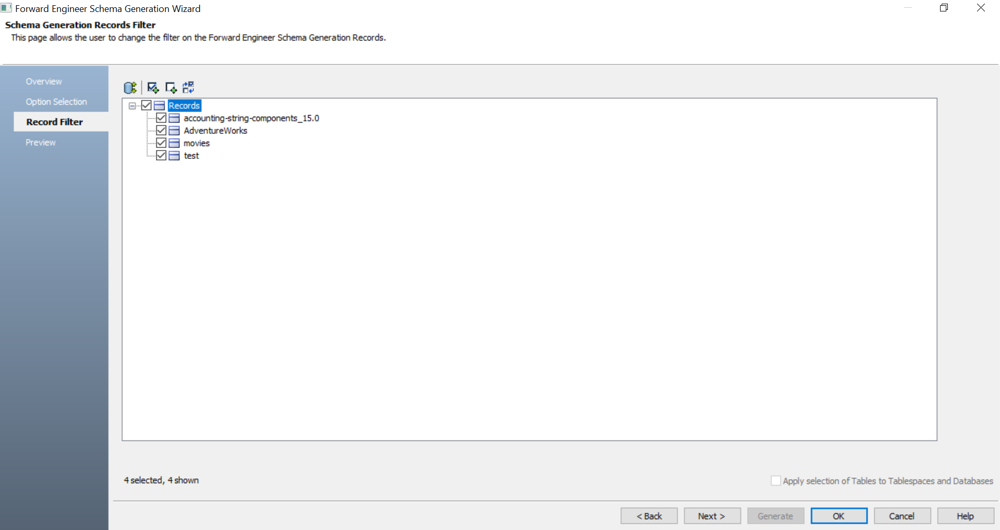
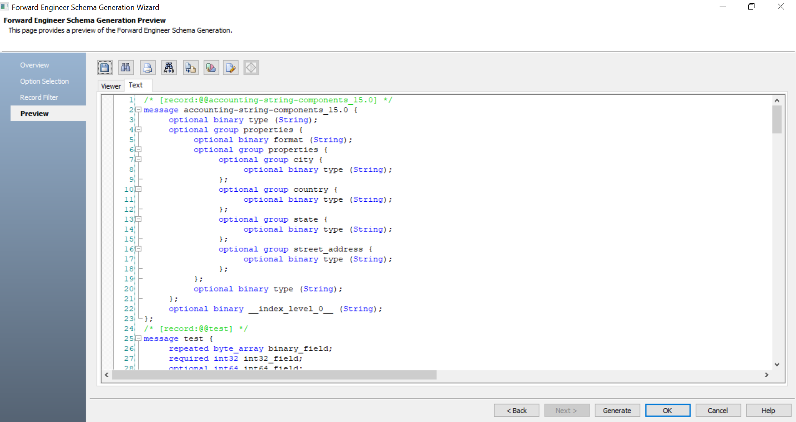
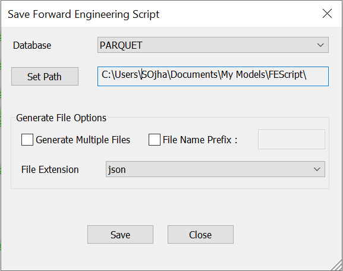

Open your Parquet model.
Ensure that you are in the Physical mode.
Click Actions > Schema.
The Forward Engineer Schema Generation Wizard appears.

Click Option Selection.
The Option Selection tab displays the default option set. Select appropriate syntax options.

Click Next.
The Record Filter tab appears. It displays a list of records available in your model.

Select the records that you want to forward engineer.
Click Preview to view the schema script.

Use the following options:
-
Error Check (
 ): Use this option to run an error check. Based on the results, you can correct the generated script.
): Use this option to run an error check. Based on the results, you can correct the generated script. -
Text Options (
 ): Use this option to configure the preview text editor's look and feel, such as window, font, syntax color settings. For more information, refer to the Forward Engineering Wizard - Preview Editor topic.
): Use this option to configure the preview text editor's look and feel, such as window, font, syntax color settings. For more information, refer to the Forward Engineering Wizard - Preview Editor topic. -
Copy (
 ): Use this option to copy the script.
): Use this option to copy the script. -
Save (
 ): Use this option to save the generated script in the JSON or BSON format.
): Use this option to save the generated script in the JSON or BSON format.
Click Generate.
The following screen appears.

- Set Path: Use this option to set the location to save the generated forward engineering script file.
- Generate Multiple Files: By default, a single forward engineering script file is created. Use this option to save the script into multiple files, grouped-by objects.
- File Name Prefix: Use this option to add a script file name. Enter a file name. If this option is not selected, the script file is saved with a default name, Erwin_FE_Script.json.
Your script file is saved in the JSON format at the configured location. You can open it in any text editor and verify.